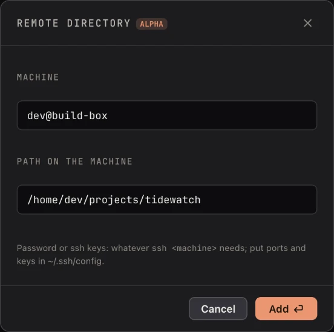
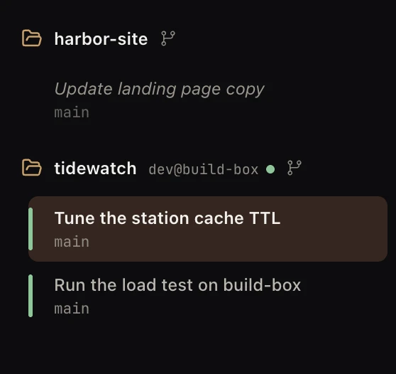

Remote folders (alpha)
Koloft can open a folder that lives on another computer, one you reach with
ssh (a safe way to log in to another computer over the network). Claude Code
runs over there. You watch it and work with it from your Mac. This part is
alpha: it is early, it works, and it still has gaps. The ones we
know are listed below.
Add one
Click the Add workspace button (the folder with a plus) at the top of the window, then
pick Remote directory…. Koloft asks for two things:
- Machine:
user@host, or a name from your ssh settings -
Path on the machine: the full path, starting with
/, such as/home/me/project

Keys set in ~/.ssh/config work everywhere. A password works too: type it once
in a tab, and Koloft's own checks use that login after that.
These work too:
- a company jump host, the computer you must pass through to reach the others
- a gateway computer that gives you no real terminal, such as JumpServer
- a login shell that is
tcsh,cshorfish - a
RemoteCommandorRequestTTYline in your ssh settings - keys from an ssh agent that your login shell starts
What happens there
Claude Code runs on the other machine. The account it uses comes from
the pool on your Mac. Its transcripts (the written record of
each session) stay there, and rsync (a tool that copies files) brings copies
back, so the sessions list reads like a folder on your Mac.

your Mac the other machine +-----------------+ +------------------+ | Koloft | | tmux | | | ssh | +------------+ | | the tab | <------> | | claude | | | | | +------------+ | | account it | | | | picked | -------> | claude uses it | | | | | | copies of | rsync | transcripts | | transcripts | <------- | (the real ones) | | | | | | | v | | | | sessions list | | | +-----------------+ +------------------+
-
Claude runs inside
tmux(a program that keeps a terminal going after you leave). If the link drops, Claude keeps working. Koloft keeps trying to reach the machine: soon at first, then less and less often, down to once a minute. Close the session's tab meanwhile and Koloft says so:Could not stop “…” on <machine>: <why>. It is still running there.The row stays lit, and a click joins that session again. -
The agent gets the
koloftcommand there too, a moment slower, since each answer comes from Koloft on your Mac (see Agents can use Koloft too). It can also start a new session on that machine, in its own git worktree (a second copy of the repo on its own branch). -
The first session on a machine takes a few seconds longer:
claudefetches its own settings once. - What the sidebar shows for a session there, its light and its title, is a few seconds behind the machine.
- A folder's Assist looks after a remote folder's sessions too. It runs on your Mac, not on the machine. From your phone, see A butler on Discord.
What Koloft installs there
-
bash,claude,tmuxandrsync, if the machine is missing them, over the same link -
if the
claudethere is older than this Koloft needs, it getsclaude updatebefore the session starts; if that does not bring it up to date, the session does not start and the tab asks you to run the update yourself -
bash,tmuxandrsynccome from the machine's own package manager, which may ask for its sudo password (the admin password) -
gh, GitHub's command-line tool, if the machine has none (about 40 MB, once); you still sign in to it there yourself -
a small
koloftscript, and the guide that tells the agent how to use it - Node, only for the status line; if that fails, the session still runs, just without a status line
-
on an old Linux, where the usual Node build will not run, one more Node build made for
older Linux, from
unofficial-builds.nodejs.org
The Workbench there
The Workbench works on a remote folder too. These are all the machine's, not your Mac's:
- its files and its changes
- the editor and the shell
- the Scratchpad
- links inside a Markdown file, and
path:linelinks - the card you see with the Workbench folded
An HTML file in that card opens as its source, not as a page.
The count of changed files there catches up at most every 10 seconds.
If ssh drops for a moment, Files keeps what it showed and Changes offers Retry.
Not there yet
- Images and PDFs (document files) from the machine do not show a preview.
- An agent's
open <url>does not reach the Workbench. - The agent cannot drive your web tabs. See Agents can use Koloft too.
- No Codex yet. A remote folder runs Claude Code only.
-
A session row's menu offers Copy path (
machine:/path) instead of Reveal in Finder. The panel you get by hovering the small branch icon beside the folder's name shows no Pull, no Fetch now and no Account. - Koloft does not check whether the folder's branch is behind its git remote. The open issue and pull request counts of a GitHub repo do show.
Next page → A butler on Discord